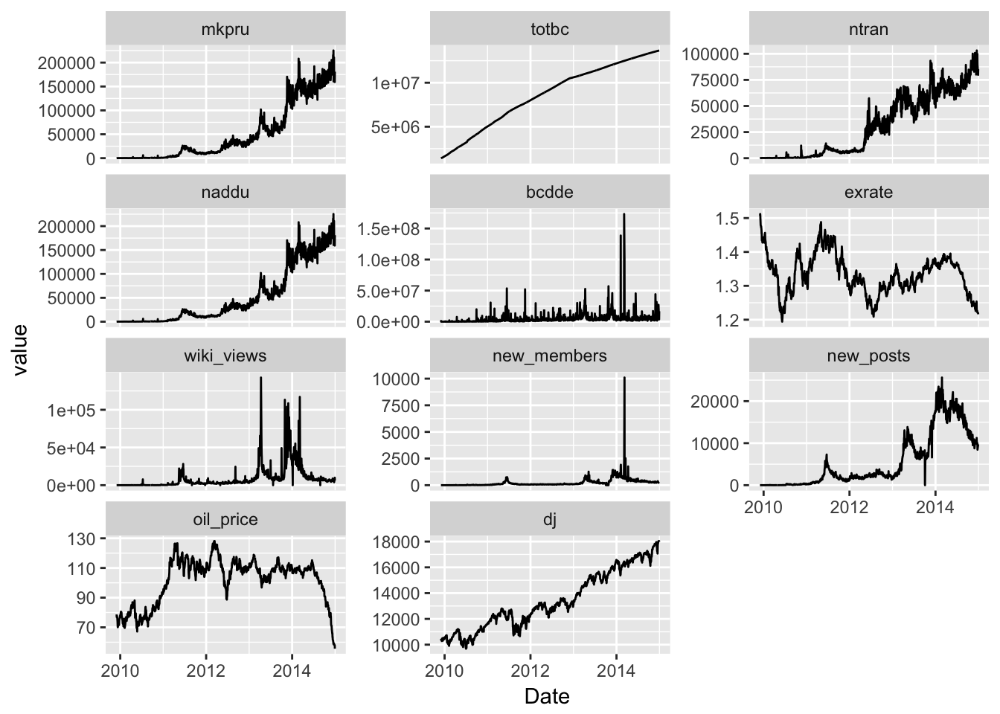

library(dplyr)
library(tseries)
library(rlist)
library(knitr)
library(urca)
library(ggplot2)
library(tidyr)
library(magrittr)
library(corrr)重製 (Ciaian, Rajcaniova, and Kancs 2014)
比特幣貨幣供給：
\[M^S = P^B B \]
貨幣需求
\[M^D = \frac{PY}{V}\]
在貨幣供給與貨幣需求交叉時，隱含下式成立
\[ P^B = \frac{PY}{VB}\]
取 log 後
\[ p^B_t = \beta_0 +\beta_1 p_t +\beta_2 y_t +\beta_3 v_t +\beta_4 b_t + \epsilon_t\]
all_data <- readRDS("data/all_data.rda")
all_data <- all_data %>% filter(Date<"2014-12-31")
all_data %>% glimpse()## Observations: 1,264
## Variables: 12
## $ Date <date> 2014-12-30, 2014-12-29, 2014-12-24, 2014-12-23, 2...
## $ mkpru <dbl> 181005, 159314, 174711, 210726, 195624, 160502, 22...
## $ totbc <dbl> 13666700, 13663050, 13642825, 13639050, 13635000, ...
## $ ntran <dbl> 85247, 79812, 89515, 99770, 89437, 92052, 103161, ...
## $ naddu <dbl> 181005, 159314, 174711, 210726, 195624, 160502, 22...
## $ bcdde <dbl> 16810168, 3589855, 27154619, 3800448, 5495943, 449...
## $ exrate <dbl> 1.2160, 1.2197, 1.2219, 1.2213, 1.2259, 1.2279, 1....
## $ wiki_views <dbl> 6162, 9927, 3904, 4752, 5168, 4905, 5563, 6328, 69...
## $ new_members <dbl> 301, 297, 231, 271, 285, 272, 376, 307, 286, 285, ...
## $ new_posts <dbl> 9460, 9538, 8451, 9903, 10031, 9884, 10509, 11248,...
## $ oil_price <dbl> 55.60, 57.86, 58.67, 59.07, 58.31, 58.87, 58.81, 5...
## $ dj <dbl> 17983.07, 18038.23, 18030.21, 18024.17, 17959.44, ...all_data %>%
gather(key = "column", value="value", -Date, factor_key = T) %>%
ggplot(aes(x= Date, y= value)) +
geom_line() +
facet_wrap(~column, scales = "free_y", ncol = 3)
pretty_cor <- . %>% correlate() %>% shave %>% fashion() %>% kable(align = "r")
all_data %>% select(-Date, -mkpru) %>% pretty_cor| rowname | totbc | ntran | naddu | bcdde | exrate | wiki_views | new_members | new_posts | oil_price | dj |
|---|---|---|---|---|---|---|---|---|---|---|
| totbc | ||||||||||
| ntran | .90 | |||||||||
| naddu | .82 | .93 | ||||||||
| bcdde | .29 | .30 | .27 | |||||||
| exrate | -.24 | -.24 | -.13 | .00 | ||||||
| wiki_views | .44 | .50 | .48 | .43 | .08 | |||||
| new_members | .43 | .47 | .52 | .49 | .12 | .57 | ||||
| new_posts | .77 | .83 | .91 | .26 | .04 | .56 | .61 | |||
| oil_price | .46 | .15 | .05 | .15 | .25 | .22 | .18 | .20 | ||
| dj | .93 | .94 | .92 | .28 | -.14 | .46 | .48 | .87 | .29 |
論文上面表示所有序列都不平穩
Both tests show that all the time series are non-stationary in levels but stationary in first differences (results of the tests are available upon request from authors).
apply_stationary_test <- function(df, test) df %>%
select_if(is.numeric) %>%
lapply(test) %>%
list.rbind() %>%
as.data.frame() %>%
.[,1:5]
all_data %>% apply_stationary_test(adf.test) %>% kable| statistic | parameter | alternative | p.value | method | |
|---|---|---|---|---|---|
| mkpru | -2.029021 | 10 | stationary | 0.5660283 | Augmented Dickey-Fuller Test |
| totbc | -1.461064 | 10 | stationary | 0.8064528 | Augmented Dickey-Fuller Test |
| ntran | -2.70011 | 10 | stationary | 0.2819463 | Augmented Dickey-Fuller Test |
| naddu | -2.029021 | 10 | stationary | 0.5660283 | Augmented Dickey-Fuller Test |
| bcdde | -8.684171 | 10 | stationary | 0.01 | Augmented Dickey-Fuller Test |
| exrate | -2.113085 | 10 | stationary | 0.5304425 | Augmented Dickey-Fuller Test |
| wiki_views | -4.528032 | 10 | stationary | 0.01 | Augmented Dickey-Fuller Test |
| new_members | -4.897156 | 10 | stationary | 0.01 | Augmented Dickey-Fuller Test |
| new_posts | -1.798901 | 10 | stationary | 0.6634413 | Augmented Dickey-Fuller Test |
| oil_price | -3.643006 | 10 | stationary | 0.02854341 | Augmented Dickey-Fuller Test |
| dj | -3.192426 | 10 | stationary | 0.08922365 | Augmented Dickey-Fuller Test |
all_data %>% apply_stationary_test(pp.test) %>% kable| statistic | parameter | alternative | p.value | method | |
|---|---|---|---|---|---|
| mkpru | -27.9347 | 7 | stationary | 0.01354644 | Phillips-Perron Unit Root Test |
| totbc | -0.5681851 | 7 | stationary | 0.99 | Phillips-Perron Unit Root Test |
| ntran | -92.09774 | 7 | stationary | 0.01 | Phillips-Perron Unit Root Test |
| naddu | -27.9347 | 7 | stationary | 0.01354644 | Phillips-Perron Unit Root Test |
| bcdde | -924.5475 | 7 | stationary | 0.01 | Phillips-Perron Unit Root Test |
| exrate | -10.26176 | 7 | stationary | 0.5373211 | Phillips-Perron Unit Root Test |
| wiki_views | -134.5997 | 7 | stationary | 0.01 | Phillips-Perron Unit Root Test |
| new_members | -869.9306 | 7 | stationary | 0.01 | Phillips-Perron Unit Root Test |
| new_posts | -13.40014 | 7 | stationary | 0.3622546 | Phillips-Perron Unit Root Test |
| oil_price | -14.12571 | 7 | stationary | 0.3217809 | Phillips-Perron Unit Root Test |
| dj | -25.01554 | 7 | stationary | 0.0242203 | Phillips-Perron Unit Root Test |
first_diff_df <- all_data %>% select(-Date) %>% lapply(diff) %>% bind_cols()
first_diff_df %>% apply_stationary_test(adf.test) %>% kable| statistic | parameter | alternative | p.value | method | |
|---|---|---|---|---|---|
| mkpru | -12.80136 | 10 | stationary | 0.01 | Augmented Dickey-Fuller Test |
| totbc | -6.467923 | 10 | stationary | 0.01 | Augmented Dickey-Fuller Test |
| ntran | -13.62754 | 10 | stationary | 0.01 | Augmented Dickey-Fuller Test |
| naddu | -12.80136 | 10 | stationary | 0.01 | Augmented Dickey-Fuller Test |
| bcdde | -17.23255 | 10 | stationary | 0.01 | Augmented Dickey-Fuller Test |
| exrate | -9.786337 | 10 | stationary | 0.01 | Augmented Dickey-Fuller Test |
| wiki_views | -14.50567 | 10 | stationary | 0.01 | Augmented Dickey-Fuller Test |
| new_members | -15.66745 | 10 | stationary | 0.01 | Augmented Dickey-Fuller Test |
| new_posts | -11.15824 | 10 | stationary | 0.01 | Augmented Dickey-Fuller Test |
| oil_price | -10.48832 | 10 | stationary | 0.01 | Augmented Dickey-Fuller Test |
| dj | -10.71333 | 10 | stationary | 0.01 | Augmented Dickey-Fuller Test |
first_diff_df %>% apply_stationary_test(pp.test) %>% kable| statistic | parameter | alternative | p.value | method | |
|---|---|---|---|---|---|
| mkpru | -1305.826 | 7 | stationary | 0.01 | Phillips-Perron Unit Root Test |
| totbc | -1466.206 | 7 | stationary | 0.01 | Phillips-Perron Unit Root Test |
| ntran | -1243.034 | 7 | stationary | 0.01 | Phillips-Perron Unit Root Test |
| naddu | -1305.826 | 7 | stationary | 0.01 | Phillips-Perron Unit Root Test |
| bcdde | -1284.579 | 7 | stationary | 0.01 | Phillips-Perron Unit Root Test |
| exrate | -1304.655 | 7 | stationary | 0.01 | Phillips-Perron Unit Root Test |
| wiki_views | -1001.555 | 7 | stationary | 0.01 | Phillips-Perron Unit Root Test |
| new_members | -1461.68 | 7 | stationary | 0.01 | Phillips-Perron Unit Root Test |
| new_posts | -1179.383 | 7 | stationary | 0.01 | Phillips-Perron Unit Root Test |
| oil_price | -1260.413 | 7 | stationary | 0.01 | Phillips-Perron Unit Root Test |
| dj | -1302.082 | 7 | stationary | 0.01 | Phillips-Perron Unit Root Test |
# all_data %>% select(-Date) %>% ca.jo(type="eigen", K=2, ecdet="none", spec="longrun")Ciaian, Pavel, Miroslava Rajcaniova, and D’Artis Kancs. 2014. “The Economics of BitCoin Price Formation,” May. http://arxiv.org/abs/1405.4498.